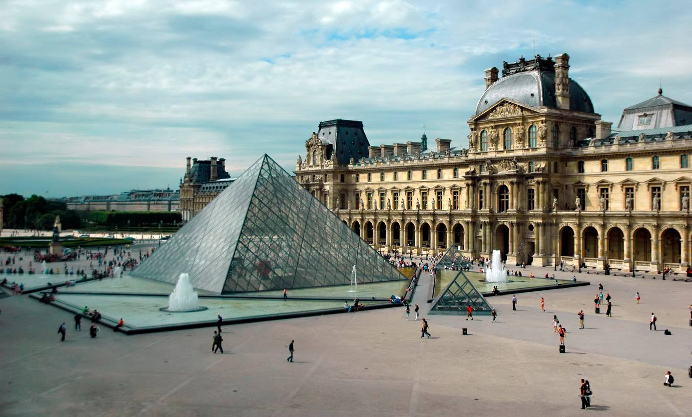
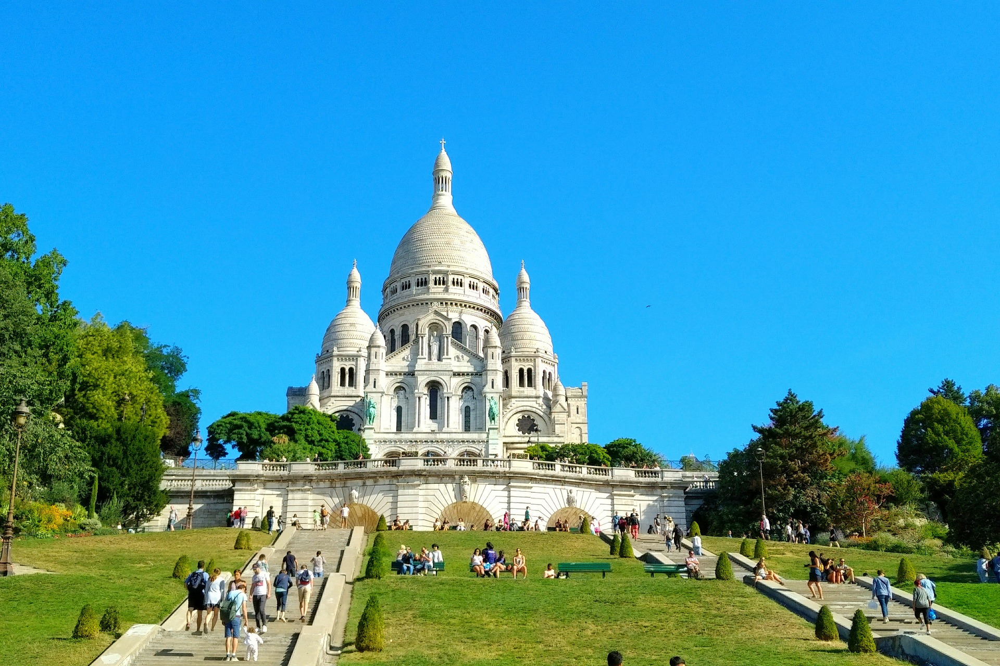

Sitios que no puedes perderte

Torre Eiffel
El icono más famoso de París. Visítala de día y de noche para disfrutar vistas espectaculares.

Museo del Louvre
Casa de la Mona Lisa y muchas obras maestras. Reserva tus entradas con antelación.

Notre-Dame
Impresionante arquitectura gótica y una visita obligada en el corazón de París.

Montmartre
Calles bohemias y la basílica del Sacré-Cœur con vistas panorámicas de la ciudad.